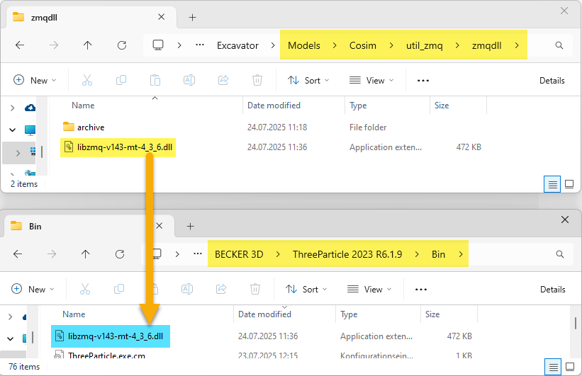
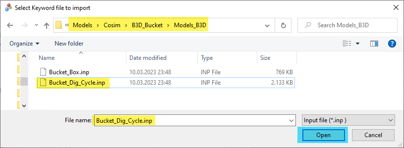
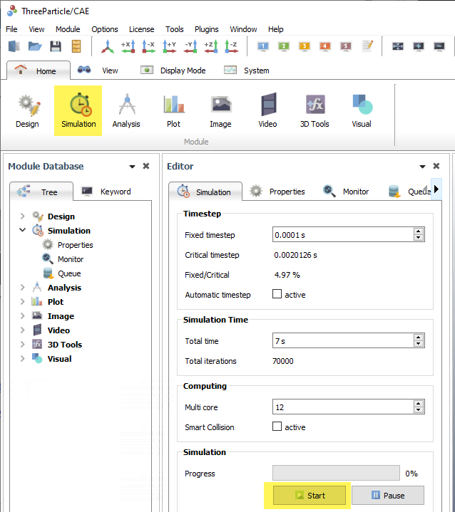
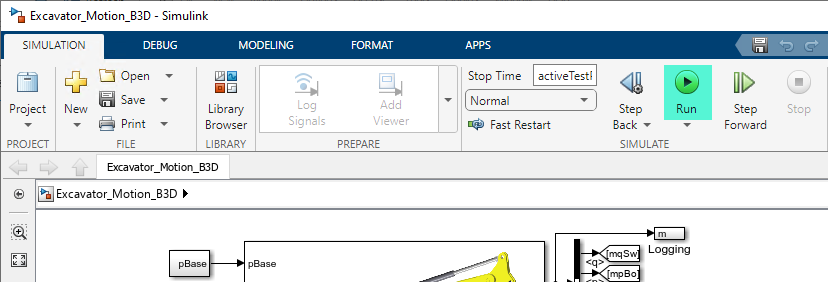
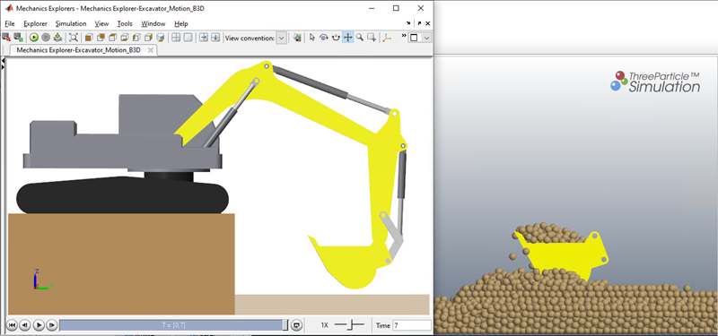
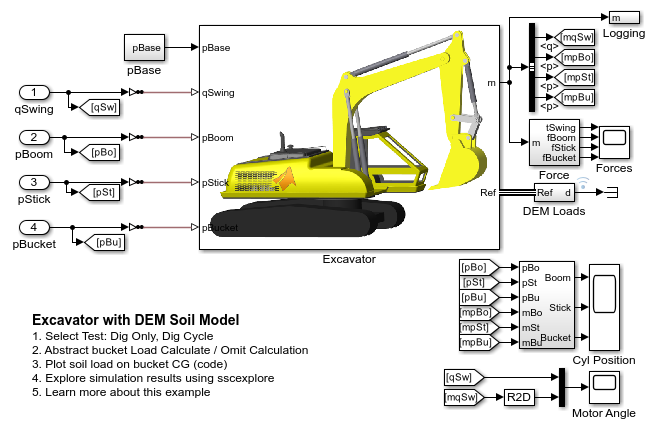
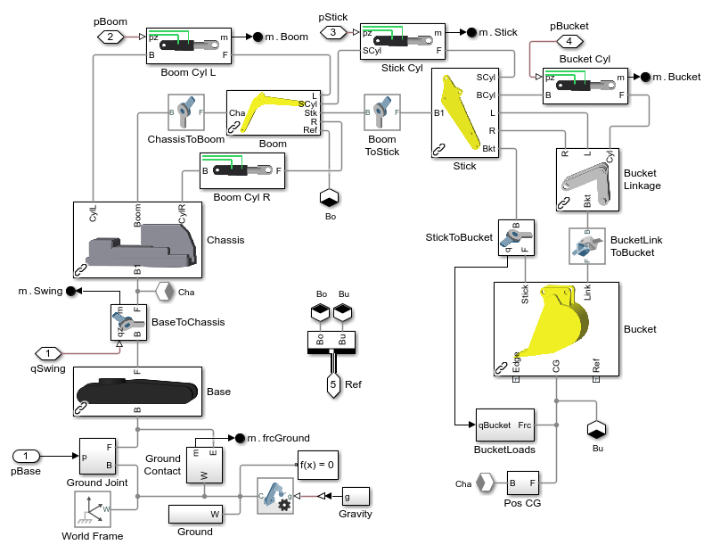
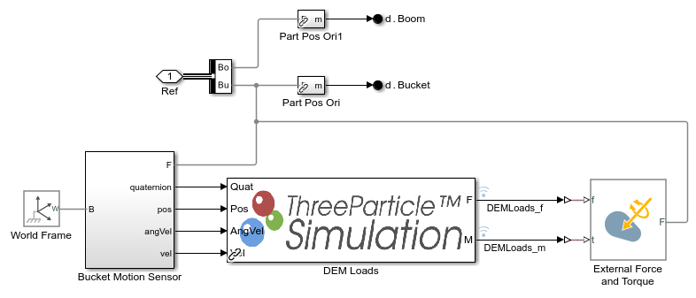
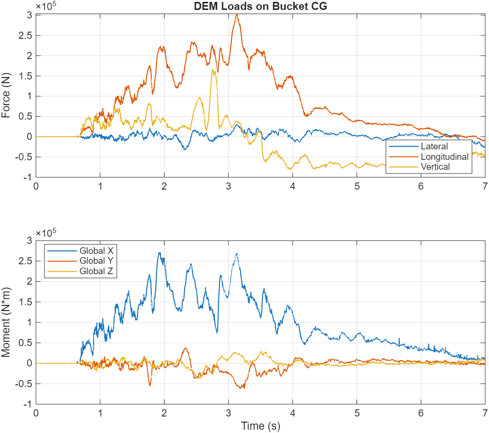

Excavator Design with Simscape™: Model Soil Loads

(return to Excavator Design Overview)
This example models an excavator acting against soil loads modeled using discrete element modeling in ThreeParticle/CAE software. The motion of the actuators is prescribed and the simulation calculates the amount of force or torque required to execute the motion. Cosimulation is used to connect the Simscape Multibody model to ThreeParticle/CAE.
Follow the steps below to set up cosimulation on your machine. All of the files you need to set up the cosimulation are provided here. You will also need ThreeParticle software. Note that the compiled files provided will only work with MATLAB R2025a on a Windows 64 bit operating system. To set up this example for other versions or operating systems, please contact the authors of this submission on the MATLAB Central File Exchange.
Open Excavator with ThreeParticle DEM Soil Loads Model
Contents
Cosimulation Setup
(Note: the compiled files will only work with MATLAB R2025a on a Windows 64 bit operating system.)
1. Copy \Models\Cosim\util_zmq\zmqdll\libzmq-v143-mt-4_3_6.dll to the "Bin" subfolder within your ThreeParticle installation directory.

2. Copy \Models\Cosim\B3D_Bucket\CosimDLL\API_CoSimulation.dll to the "Bin\API" subfolder within your ThreeParticle installation directory.

3. Open ThreeParticle Software
4. Import keyword file \Models\Cosim\B3D_Bucket\Models_B3D\Bucket_Dig_Cycle.inp

5. In MATLAB, open Simulink model Excavator_Motion_B3D.slx
6. Start the simulation in ThreeParticle software

7. Start the simulation in Simulink

8. Monitor the progress in animation

Model
Excavator Machine Subsystem
DEM Loads Subsystem
Dig Test
The simulation actuates the excavator arm to dig the bucket into the bed of particles which models the soil. The soil loads are plotted below.
